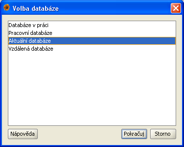
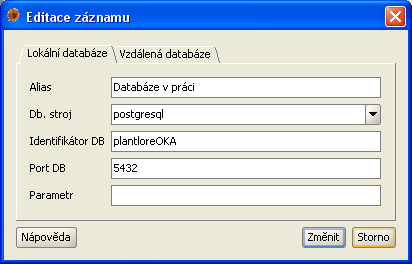

V této sekci se dozvíte:
Přihlášení k databázi, kde jsou Vaše data uložena, je první krok při práci s Plantlore.

Po instalaci Plantlore je k disposici pouze jedna databáze pojmenovaná Ukázková databáze. Tato databáze neobsahuje žádné záznamy, žádná nálezová data, a je připravena pro započetí práce.
Neobsahuje-li seznam databází žádný záznam, budete jej muset nejprve vytvořit. Po jisté době používání Plantlore může Váš seznam databází vypadat podobně jako ten na obrázku. Plantlore automaticky zvýrazní jako vybranou tu databázi, kterou jste zvolili při posledním přihlašování. Vyberte jednu z databází v seznamu a stiskněte tlačítko Pokračuj.
Pro přihlášení k databázi je potřeba se prokázat přihlašovacími údaji - uživatelským jménem a heslem. Pokud se přihlašujete poprvé, zadejte přihlašovací údaje, které jste použili při instalaci Plantlore. Nové uživatelské jméno a heslo smí přidělit pouze správce databáze.
Plantlore si pamatuje několik posledních uživatelských jmen vkládaných při přihlášování; můžete vybrat jedno z připraveného seznamu, nebo zadat jiné uživatelské jméno. Hesla si Plantlore nikdy neukládá - automaticky je tedy nenabízí. Po zadání údajů stiskněte tlačítko Přihlásit.
Stiskem tlačítka přihlásit se Plantlore pokusí připojit k vybrané databázi se zadanými přihlašovacími údaji. Připojení může (zejména pokud se připojujete ke vzdálené databázi) trvat delší dobu - o průběhu připojování informuje jednoduchý dialog.
Pokud se přihlášení z nějakého důvodu nezdaří, budete o tom informováni krátkou zprávou. V opačném případě Plantlore zobrazí základní Přehled.
Chcete-li se připojit k jiné databázi, kterou jste sami vytvořili nebo kterou vytvořil někdo jiný na svém počítači, musíte vytvořit nový záznam, který popisuje, kde se databáze nachází a jak je nastavena.
Kontextové menu pro vytvoření, upravení nebo vymazání záznamu lze vyvolat stiskem pravého tlačítka myši. Vyberte položku Přidat a klikněte na ni.

Přidání nového záznamu pro připojení k jiné databázi je rozděleno na dvě části, jimž odpovídají dvě záložky na dialogu.
Parametry popisující přímé připojení:
| Název | Význam |
|---|---|
| Alias | Alias je krátký řetězec, který umožňuje snadnou identifikaci databáze uživatelem. Tento řetězec je zobrazován v seznamu databází. Měl by být krátký a výstižný, kupříkladu: Domácí databáze, Projekt mapování Českého středohoří. |
| Databázový stoj (engine) | Existuje několik databázových strojů (database engine), které umožňují snadnou práci s databázemi, tabulkami, uživateli, dotazy a daty. Každý databázový stroj může obsahovat několik různě pojmenovaných databází s různou strukturou a s různým obsahem. Mezi nejznámější databázové stroje bezesporu patří Oracle, MSSQL, MySQL, Postgre a Firebird. Plantlore podporuje práci s různými databázovými stroji, ale je nutné přesně specifikovat, o který se jedná, aby s ním mohl bezchybně komunikovat. Plantlore je standardně dodáván s Postgre. Aktuálně podporované DB stroje jsou sepsány v rozbalovací nabídce, ale je možné specifikovat i jiný. |
| Identifikátor DB | Databázový stroj může obsahovat několik různých databází s různou strukturou a obsahem. Databáze Plantlore mají vlastní specifickou strukturu. Pro správné připojení je nutné, aby uživatel vyplnil i identifikátor (jméno) databáze, se kterou chce pracovat. |
| Port DB | Databázové stroje umožňují připojení pouze přes tzv. port. Každý databázový stroj má tento port jiný a navíc jej lze snadno změnit. Aby Plantlore věděl, kde má databázový stroj kontaktovat, musí znát port, na kterém stroj naslouchá. Port je číslo v rozsahu 0 až 65.535, přičemž je běžné, že databázové stroje využívají porty v rozsahu 1.024 až 10.000. Kupříkladu standardní port databázového stroje Postgre je 5432. |
| Parametr |
Databázový stroj může být potřeba ještě nakonfigurovat nějakým specifickým
způsobem. Některé stroje kupříkladu vyžadují explicitní nastavení kódování
znaků (UTF-8, ISO-8859-2, Windows CodePage 1250, apod.) Tenot parametr slouží
pro správné nastavení dodatečných paremetrů připojení k databázovému stroji.
Připojení k Postgre žádný parametr nevyžaduje, ale např. pro správné zobrazení
diakritiky od Firebird je potřeba kódování nastavit.
Odborné: parametr je hodnota předávaná v připojovacím JDBC řetězci za ? |
Na ukázku uveďme, jak by vypadalo lokální připojení k databázi nazvané plantlore, která je uložena v databázovém stroji Postgre, který naslouchá na portu 5432.

Parametry popisující vzdálené připojení:
| Název | Význam |
|---|---|
| Alias | Alias je krátký řetězec, který umožňuje snadnou identifikaci databáze uživatelem. Tento řetězec je zobrazován v seznamu databází. Měl by být krátký a výstižný, kupříkladu: Oficiální databáze Jihočeské pobočky ČBS. |
| Host | Databázový stroj obsahující databázi, k níž se chceme připojit, běží na jiném počítači v síti. Tento parametr identifikuje tento počítač a to buď podle jeho tzv. hostname nebo IP adresy. Každý počítač připojený k síti musí mít svou vlastní unikátní IP adresu, podle níž je rozpoznán. IP adresa je nejčastěji čtveřice čísel oddělená tečkami, kupř. 192.168.0.247. Některé počítače mají kromě IP adresy přidělena i jména, např. data.domacisit.info. Cílový počítač lze tedy identifikovat oběma způsoby. |
| Port | Aby bylo možné se připojit ke vzdálenému databázovému stroji, je nutné na uvedeném vzdáleném počítači kontaktovat Plantlore Server, což je speciální aplikace, která má za úkol zprostředkovávat připojení vzdáleným klientům a dohlížet na počet připojených uživatelů. Tato služba (aplikace) musí být přístupná na vzdáleném počítači, kde se nachází i vzdálený databázový stroj, a naslouchá na nějakém portu. Standardní port, na kterém je tato služba dostupná, je 1099. |
| Identifikátor DB | Databázový stroj může obsahovat několik různých databází s různou strukturou a obsahem. Databáze Plantlore mají vlastní specifickou strukturu. Pro správné připojení je nutné, aby uživatel vyplnil i identifikátor (jméno) databáze, se kterou chce pracovat. |
Na ukázku uveďme, jak by vypadalo nastavení pro vzdálené připojení k databázi nazvané plantlore, která je uložena v databázovém stroji, který se nachází na počítači s adresou 192.168.0.247, a Plantlore Server naslouchá na portu 1099.

Přidáváte-li nový záznam, žádná nová databáze se nikde nevytváří; vytváří se pouze reference (odkaz) na nějakou existující databázi.
V seznamu databází označte záznam, který chcete upravit nebo smazat. Kontextové menu pro vytvoření, upravení nebo vymazání záznamu lze vyvolat stiskem pravého tlačítka myši. Vyberte položku Editovat nebo Odstranit a klikněte na ni.

Úprava záznamů je shodná s dialogem pro přidání záznamu, ale obsahuje předvyplněné hodnoty. Detailní popis lze najít v části Jak vytvořit nový záznam pro připojení k databázi.
Odstranění záznamu se provádí úplně stejně.

Mažete-li existující záznam, žádná databáze se nikde nemaže; ruší se pouze reference (odkaz) na nějakou existující databázi.
Nejčastější problémy při připojování jsou tyto: